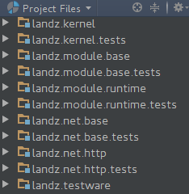
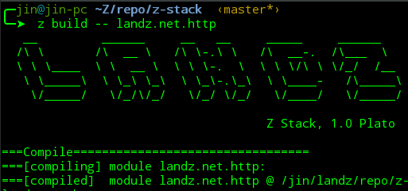
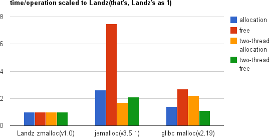
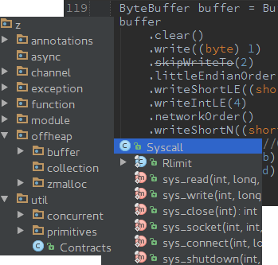

Three lines in a POJO main is enough surprisingly for driving a hello server.
No super classes or bootstrap twists.
Welcome to compare with any other web framework in any other languages.
Modularity from Scratch
Plain Java jar as a module. So, any module could be used as a library, and any Java library could be used as a module.
Flat class space. No classloader hell.
No dynamic magic in base layer.
Rolling-update repository on the road.
No out-of-control Maven.


Engineering in Mind
Z console as a swiss army knife for straight developing, building, testing and deploying.
Nashorn powered Z commands as the go-as-you-please DevOps base for every plain Java developer.
Incremental compiling is ready, and more supervising facilities is in coming.
No fat/non-Java Gradle.
Scalability with Bare Metal Efficiency
Deep affinity with multi-core x86-64, Linux and essentially open-source spirit.
One demonstration is Landz's off-heap memory allocator. It generates zero garbage in runtime. It does not use any synchronized/lock primitives(a.k.a., lock-free). It even shows the better allocation/free operation that native memory allocator like JEMalloc in the benchmark.


Batteries Included
Landz's API design philosophy promotes KISS and prefers "composable".
The two-layer buffer API ensures the read/write boundary contracts without losing raw memory accessing power which could be 30% faster than Netty's ByteBuf.
The three-layer network API: raw syscall talking to OS kernel; socket/file/epoll encapsulations hidding detailed system knowledge; higher abstractions integrated into web stack for extreme performance.
Practice proved top-performance wait-free/lock-free channel APIs as for ITC(Inter-Thread-Communication). And more others...
REST Web Stack with Ultimate Throughput
Z Stack as a powerful REST web stack is near completion.
Two 3rd-party benchmarks ("plaintext" and "json") in TechemPower has been successfully exercised against Z stack. As seen in 2-thread 512-connection "plaintext" benchmark (without pipelining), Z stack(left) has ~30% more throughput and latency improvment than Netty server's(right).
Conciseness